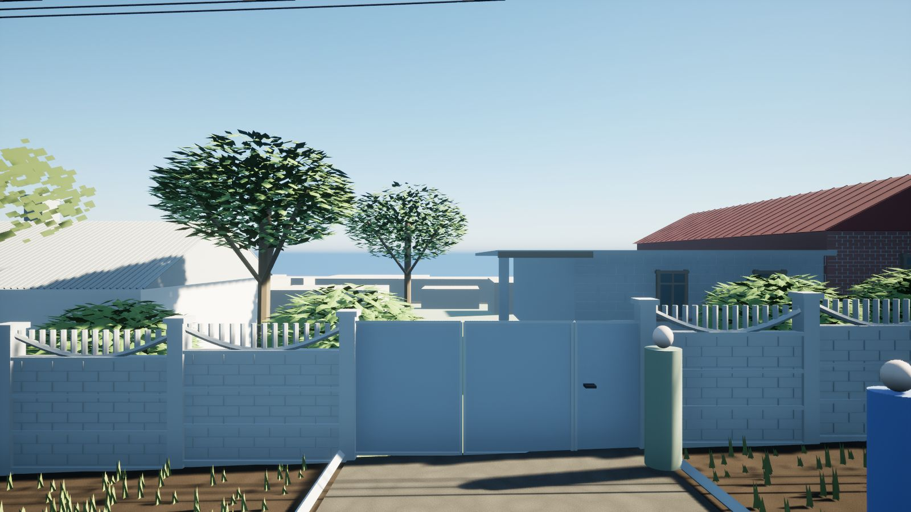
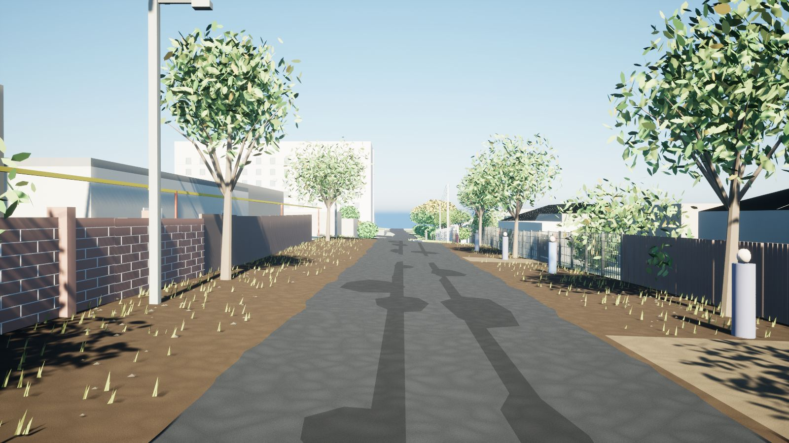
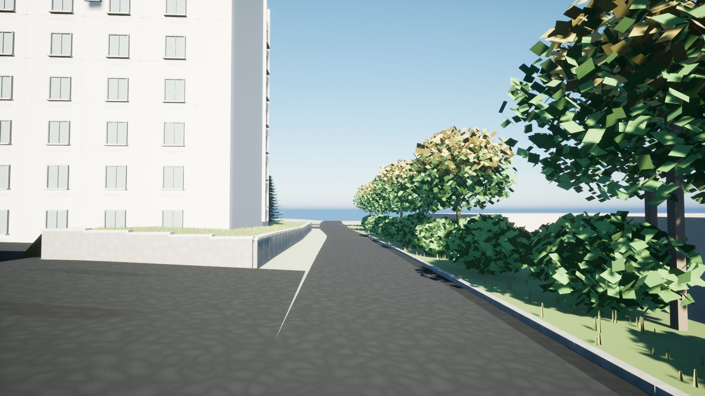
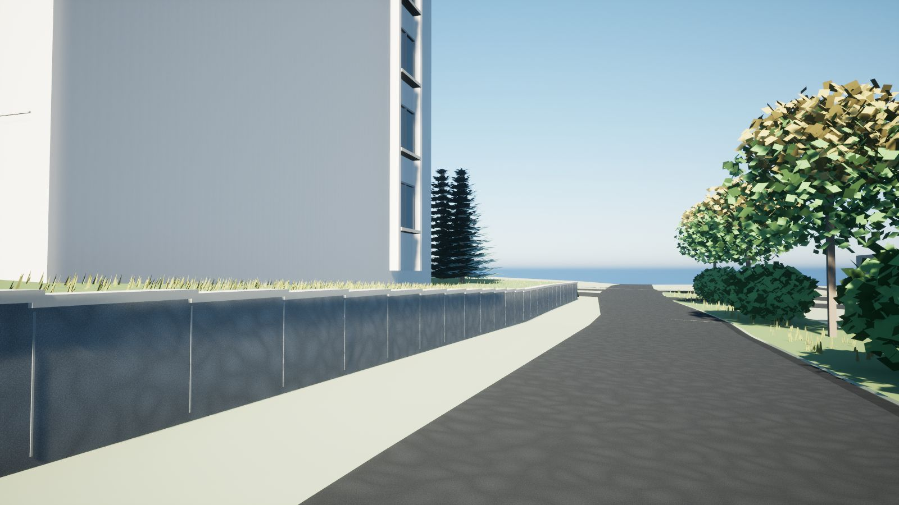
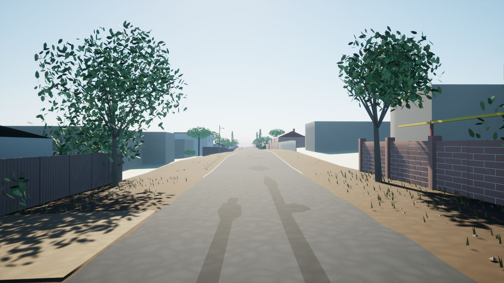
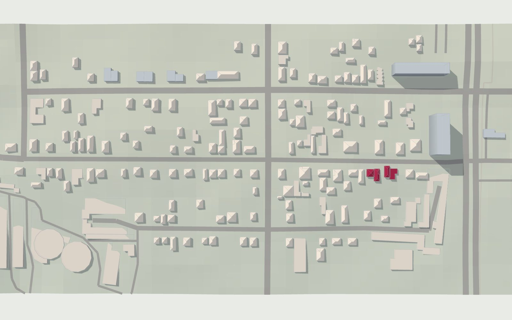
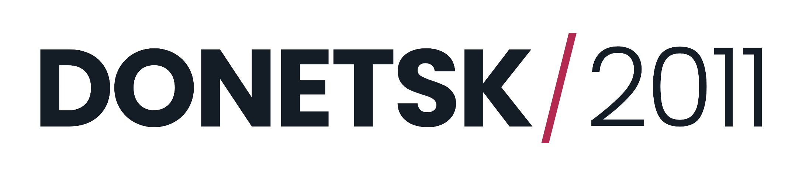

Donetsk 2011 — сольная open-world реконструкция Донецка таким, каким он был в октябре 2011 года. Город собирается в Unreal Engine 5.8 по OpenStreetMap, данным рельефа и уличным панорамам того месяца.
01Для прессы
О проекте
Станислав родился в Донецке в 1995 году и уехал в 2012-м. С 2014 года дорога домой закрыта. Donetsk 2011 — его способ вернуться: реконструкция города таким, каким он был в октябре 2011 года, когда по улице Заречной проехала машина Google Street View. Каждая улица, дом и забор восстанавливаются по источникам: контурам OpenStreetMap, рельефу NASA SRTM и панорамам октября 2011 года, которые служат только визуальной справкой. Каждая оценка помечена как оценка. Работа начинается с Заречной в Ворошиловском районе, где прошло детство автора, и растёт кольцами до всего города. Сайт проекта работает на четырёх языках: живая 3D-модель квартала, фотоархив, карта памяти и открытая лента обновлений.
Факты
- Название
- Donetsk 2011
- Жанр
- Исторический открытый мир, одиночная игра
- Движок
- Unreal Engine 5.8.3 · C++ · DX11
- Автор
- Станислав, в одиночку
- Место и время
- Донецк, октябрь 2011
- Этап
- Первый цельный маршрут (AP-01…06), квартал 280 × 660 м
- Платформа
- Windows (в разработке)
- Журнал ведётся с
- 13 сентября 2026
- Сайт
- gek2or.github.io/donetsk-2011 · EN · UA · RU · FI
Изображения








Логотип


Карты и 3D-модель содержат данные © OpenStreetMap contributors (ODbL) и NASA SRTM. Фотографии Донецка из фотоархива принадлежат их авторам по лицензиям Creative Commons и в пресс-кит не входят.
Связь
Вопросы, интервью и запросы — на почту автору или через GitHub проекта.